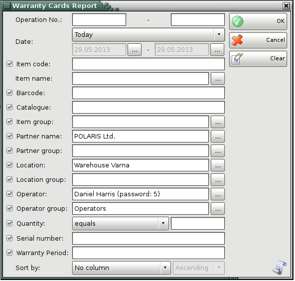
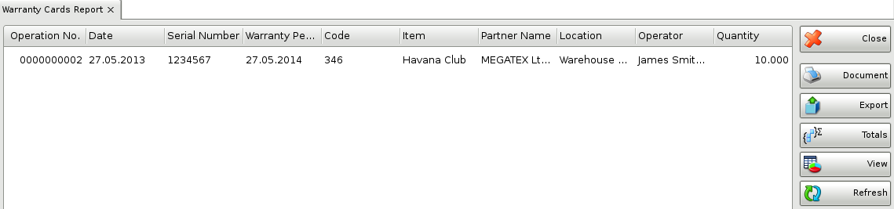

Warranty cards report
The Warranty Cards Report displays items for which warranty cards have been issued. The items are divided by rows and by documents. You can use the report to track issued warranty cards and you can filter the data by users, partners and dates. Each row in the warranty card corresponds to a row in the report.
In the first window of the report specify the filter criteria and the fields that will be visualized.

You can choose a filter for each field by pressing the F4 key.
To remove all specified filters, click the Clear button. The report will display all operations without any restrictions.
Click the OK button to generate the report using the specified criteria. Click Cancel to close the window.

Close button closes the report, Document button is used for report print preview, button Export to exports the report to CSV, Excel, Web Page or XML Data format and Totals button adds a line at the bottom of the window, that contains quantities and values amounts for each column.
�2006-2015 Microinvest, All rights reserved